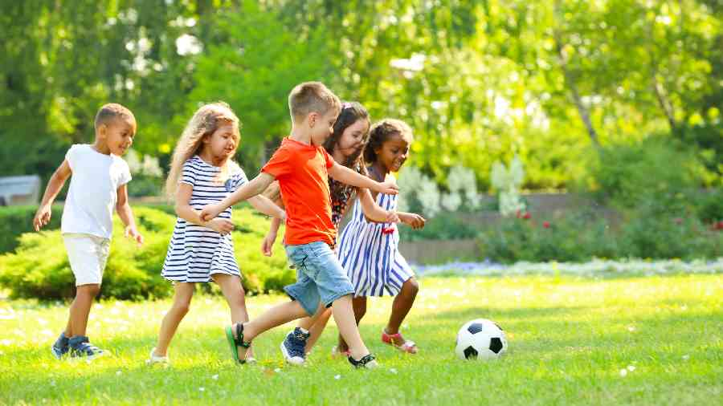

Czas Wolny

Uważam, że czas wolny dla dzieci jest jedną z najważniejszych rzeczy
w czasie czasu wolnego mozemy rozwijac swoje pasje, poznawac samych siebie
odpoczywać, itd. Warto też zauważyć, że przecież samą pracą człowiek nie żyje
więc tak jak powiedzialem wczesniej czas wolny jest bardzo wazny.
Zmiany klimatyczne
Zmiany klimatyczne mają fatalne skutki, na stan naszej planety, w zaledwie 100-200
lat zdążyliśmy doprowadzić naszą planetę do okropnego stanu, powodzie, huragany, pożary
susze, to wszystko było normalne, jednak nie w takich ilosciach jak teraz. Smutne jest rownież nie tylko to,
że Ziemia to nasza planeta, i my sami ją sobie niszczymy, ale też to, że nie dajemy szansy przyszłym generacjom.
Nasze egoistyczne działania doprowadziły do tego że starsze generacje wzbogacały sie na nieszczeniu planety,
ale nie dożyją do momentu by zaznać skutków swoich czynów, konsekwencje ich czynów będą udzielac sie wyłącznie
przyszlym generacjom.
Znajomosci

Znajomości, zarówno jak czas wolny, są bardzo ważne dla dzieci.
Często jest tak, że ludzie z jakimi sie zadajemy wyznaczają nam
naszą ścieżkę w przyszłość. Ważne jest także aby pamiętać, że my sami
jesteśmy sumą 5 osób, z którymi najczęściej spędzamy czas, dlatego należy
pamiętać aby dobierać nasze znajomości z głową.